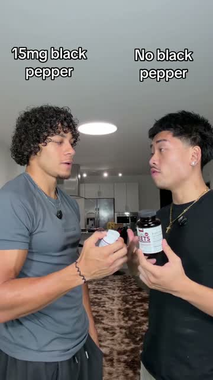

Fifty-five seconds, two friends, two bottles, and an argument about whose is better. There is no story and no founder and no pain point. By the end one of them says forget mine, we are getting yours, and that sentence does all of the selling. This is the easiest format on this whole site to film, and it is the one that fits our capsules best.
@drizzledeals · beetroot capsules · 55 seconds · one room, one phone, two people
Our own survey says it plainly. Women in our list have already bought several of these. One of our creators says out loud in her video that she bought about five kinds, and another that she spent around five hundred dollars in two years. She has a shelf of bottles that did not work.
Every other format on this site is built to convince a woman that a problem is worth solving. This one skips that completely, because she solved for that two years and four bottles ago. It walks straight into the only question she still has, which is which one of these is actually different, and it answers it by letting two people argue it out in front of her.

0:2615mg black pepper, versus none"My veins are better. My veins are definitely better. Well, I take beetroot. And I also take beetroot. So what is the difference?"
Five seconds, four lines, and the whole premise is set. There is no hook in the normal sense. Two people disagreeing is the hook, because a disagreement has an outcome and you want to know what it is.
Both drop a capsule into a glass of water. A timer runs in the corner. At two and a half seconds one glass is already going red and the other is still clear. Then he says it out loud.
"Hold on, how is yours already red? Mine has not done anything yet."
This is the strongest second in the video. It is proof she can run herself in her own kitchen, it needs no trust in either of them, and it is the only kind of evidence that survives a woman who has already been disappointed four times.
"Mine has over 1,300 milligrams of beetroot." "Mine has over 2,000 milligrams of beetroot."
Above each head the screen says 1300mg and 2000mg. No explanation of why more is better. The comparison carries the whole meaning.
"None of ours have black pepper extract, so I guess we are both low-key trash." "Actually, mine comes with 15 milligrams of black pepper."
Read that again, because it is our ingredient and our argument. A beetroot brand just won a fight on black pepper, and the same sentence is sitting unused in our capsules. The round even opens with both of them admitting they are the same, which makes the reveal land harder.
Sixty against ninety, on screen as two numbers. Then cheaper. Four rounds in total and the whole comparison is over in twenty seconds, because every round is one fact and nobody defends their own.
"Honestly bro, you are right. Your veins do pop way more. Forget mine, we are going to get yours."
Nobody in this video ever recommends the product. The argument simply ends, and the person who was defending the other bottle gives it up. She watched somebody change their mind in front of her, which is far harder to argue with than being told.
The link is mentioned once with four seconds to go. They also add a sale and a sell-out line, and those two are the parts we leave behind. We only say stock is low when it genuinely is.
From 54,555 surveys, the biggest stated struggle for both of our products is the same: gut, bloating and weight. For the capsules that is 4,643 women. For the gummies the real driver is the intimate side, and odor and freshness alone is 10,187 women. These are not women who need convincing that the problem exists.
What they say when we ask what they already tried is a list. Probiotics. Boric acid. Washes. Cutting out dairy, then gluten. Apple cider vinegar. Fibre. A doctor who said it was stress. Every one of those is a bottle or a bill that did not hold.
A story video asks her to feel what she already feels. A comparison video answers the only question she has left. For the woman with four dead bottles in the cupboard, the second one is worth more, and nobody on our team has made one yet.
You need a friend, a sister, your mum, or anybody who will stand next to you and disagree. Everything else you already have.
Both of you already take a gut supplement. Nobody is a beginner and nobody is sceptical.
This is the beat to spend your effort on, and ours is better than theirs, because our whole story is a layer that will not dissolve.
Keep every round to one sentence and move. These four are ours and all of them are true.
You never recommend it. She does.
No sale, no code, and never a sell-out line. Theirs has one and it is the one part of this video that we do not take.
The whole format needs a second bottle in shot, and this is the part to get right, because naming another brand out loud turns an opinion into a claim that somebody can come after us for.
Do not say another brand's name, do not show its label, and do not peel the label off and leave the bottle recognisable. Do not say another product does not work.
Compare against the category and let her fill in the blank herself, because she already owns one of them. The one I took before this. The pink one everybody has. The one from the pharmacy. Hold a plain bottle with the label turned away, or just hold up your own old empty one, which is the most honest version and the one she relates to most.
And compare on what is in it, never on what it did. Pineapple flavouring against the stem enzyme is a fact about two labels. Mine worked and that one did not is a claim about two bodies, and only one of those is yours to make.
Never against a doctor. Being told it was normal when it was not is yours to say. Saying a prescription does not work, or that you stopped going, is the line that gets a video pulled.
No sell-out lines, ever. Theirs ends on one. We only say stock is low when it really is.
Helps support. That is the phrase for any effect. Your own experience is yours to describe, the viewer's body is not.
Four rounds, twenty seconds, and the only person who recommends the product is the one who lost.
Breakdown 17 · nuora creator library · for our creators only